Mumbai to South Gujarat: The Student Narrative Diary
Srimad Rajchandra Jivamaitridham Project Field Engagement Deployment
Authors: Patricia, Ricardo, Chris & Dayeon
Direct on-site chronological field journal entries.
Three of us (Ricardo, Chris, and Patricia) arrived in Mumbai on Saturday after 20 hours of travel! We left our luggage at the hotel and started exploring the city.


On Sunday, Dayeon arrived and we did some more sightseeing, including some architectural landmarks such as the Chhatrapati Shivaji Museum and the Gateway of India. Mumbai has a fascinating history and its buildings reflect Indo-Saracenic architecture, a revivalist style used by British architects in late-19th-century India that blends Western Gothic and Neoclassical layouts with native Indo-Islamic and Hindu decorative elements.
At night, we met up with some Haas classmates from Mumbai and had great contemporary Indian food!


On Monday, we had the opportunity to explore the city more deeply and visited Chhatrapati Shivaji Maharaj Terminus, a UNESCO World Heritage Site. Later that evening, we met with Atmarpit Saloni and SRMD volunteer Jinal over dinner to kick off our in-country project.
We learned that there are approximately 120 Atmarpits, and other parts of the community consist of individuals balancing full-time careers while remaining deeply devoted to service and spiritual practice.
During our first meeting, we discussed our plans for the next two weeks, including the individuals and initiatives we would be engaging with throughout our stay at the ashram. Saloni also briefly walked us through how life in the ashram would look like and what we should be mindful of.
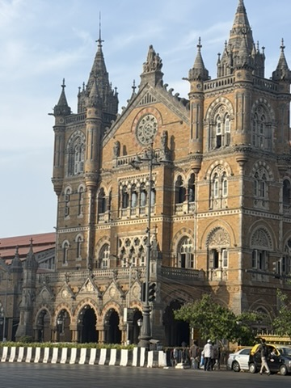
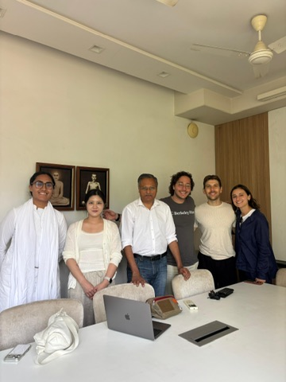
On Tuesday, we met with Dharmeshbhai (Director of the JMD Project) and presented our work at the SRMD Mumbai Office. It was a short meeting but we were able to get very useful feedback from him. Later that day, we moved from Mumbai to Dharampur. It was a long 6 hour drive so by the time we arrived at the ashram and checked in, it was 10pm so we had to call it a day.
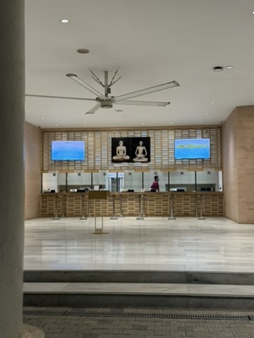
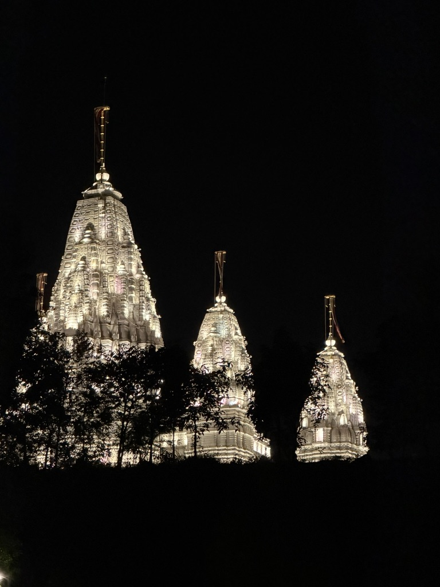
Wednesday was a tour day visiting different facilities that are operated by SRMD under the Shrimad Rajchandra Love and Care mission. Shrimad Rajchandra Love and Care is an initiative to provide seva activities encompassing health, education, animal welfare, and community development, ensuring holistic and sustainable development in one of the poorest areas of South Gujarat. We visited SRLC Hospital. The hospital has state of the art equipment that serves local Gujarati populations and provides medical care for free. They even had a children's hospital and Aquatic Therapy.
Later that day, we had time to experience aerial yoga. We immersed ourselves in Yoga as a tool for self realization, one of the main objectives of the SRMD Mission Dharampur. We even took a photo with Gurudev after the yoga class!
After our yoga session we had a dinner meeting with Atmarpit Amee, a former Spanish teacher that grew up in London. She helped us get a better understanding of the culture surrounding Atmarpits. Some of them are what is referred to as Non Resident Indians, people of Indian heritage that grew up in other countries. Her experiences coming to visit the Ashram with her family when she was growing up set the foundation for her later commitment to the Shrimad Rajchandra Mission in Dharampur.
In the evening, we participated in Arti, which is a religious ritual held in the main temple. We got to see what the Jain ceremonies looked like! They include the burning of materials that create smoke and smells, as well as the ringing of loud bells and drums. Built from the same white marble as Taj Mahal, the temple was intricate and stunning and had a nice view of the entire ashram.
After that, we did an ashram tour starting from the temple with Uncle Nitin. We learned about the construction of the temple, the tales about Jainism, and what each facility of the ashram was designed for. We also got a better understood housing model for the ashram. There are permanent residential housing for the staff, Atmarpits and the retired along with housing for those who are staying in the ashram but not permanently.
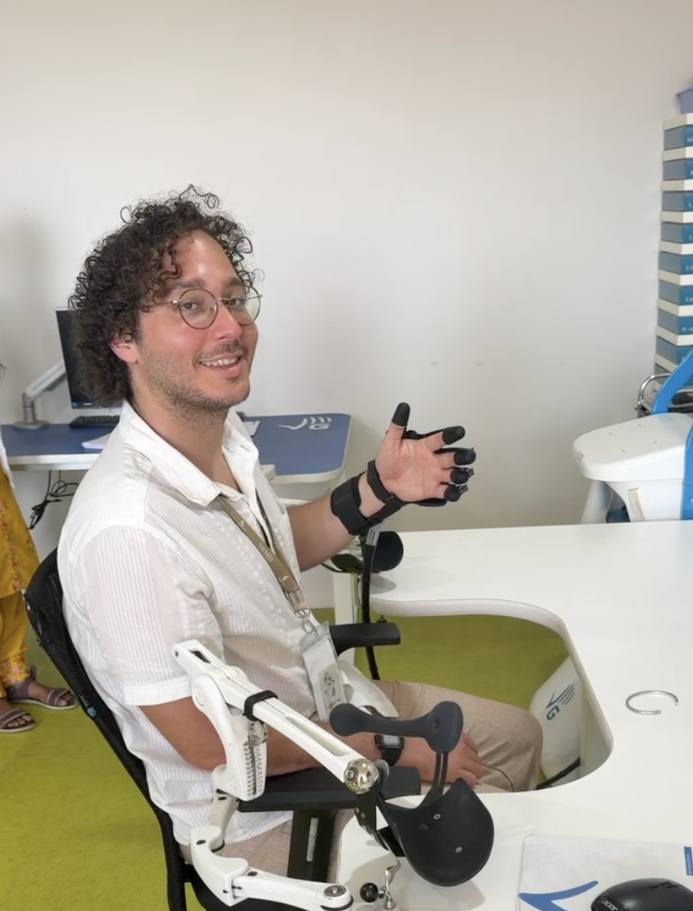
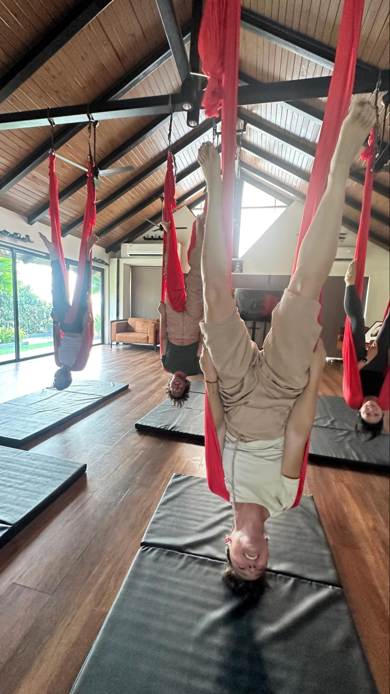
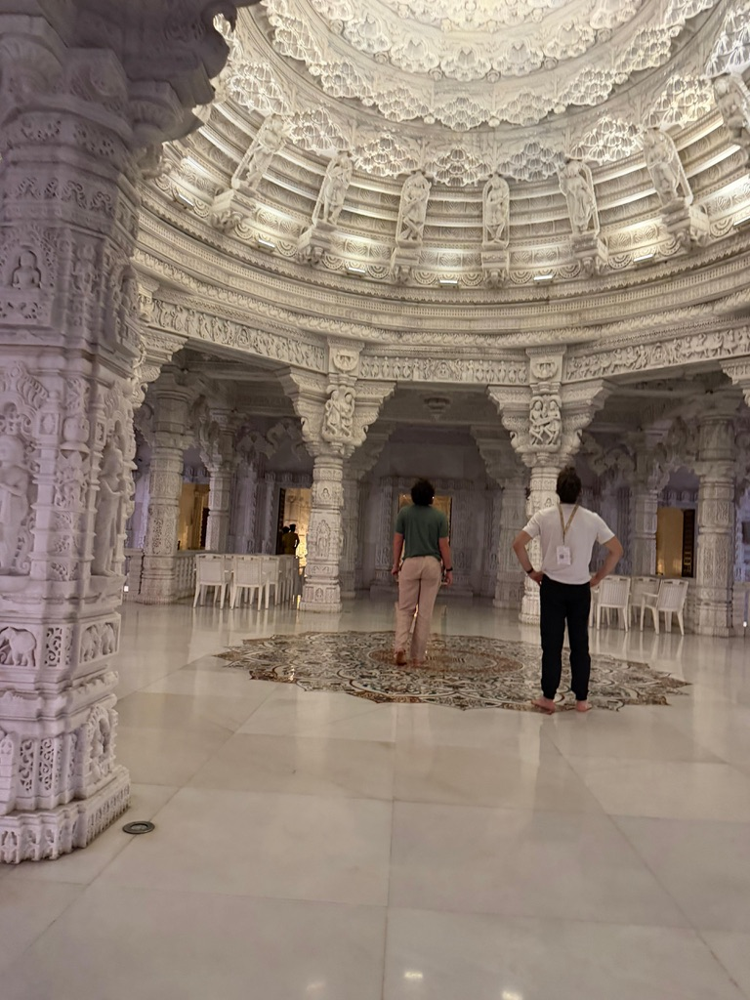
Thursday was another day spent touring SRLC facilities. We visited SRET College and several schools supported by the organization. The science college was particularly impressive, providing high-quality education to local students who may not otherwise have had access to such opportunities. Although it was summer break and we were unable to meet the students directly, we learned that a significant number of the students are women.
We then visited the school facilities, where a variety of vocational training programs were offered, including electrician training, solar panel installation, data entry, and mobile phone repair. All through the grace and vision of Gurudev, it was clear that SRMD’s mission is serving the local community in meaningful and impactful ways.
In the afternoon, we met with Virali, the Director of IT Services. It was nearly 110 degrees outside, and while navigating the massive ashram grounds, we got lost along the way. By the time we arrived to meet Viraliji, we were visibly exhausted, and she was concerned by how drained we looked. She also advised us not to visit JMD during the afternoon, since the construction site currently has no fans or air conditioning. Taking her advice, we decided to cancel the afternoon tours and postpone the visit until later in the evening when the weather had cooled down.
Later that day, we finally visited the JMD construction site, where our project is focused on. We saw the 1000 cows and two camels already at the facility. The animal hospital and the shelters/experience center were still under construction. We met with Piyushbhai who showed us around. He is one of the team leads for the JMD project.
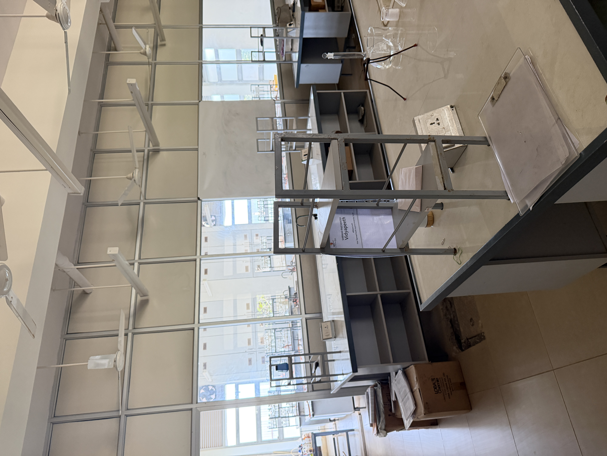


Over the weekend, we moved from the ashram to New Delhi to travel! We saw many of the historic landmarks around and outside of Delhi. We spent Saturday touring around Lodhi garden, the Red Fort, and Humayun's Tomb. We finished off the day with a team dinner and prepped ourselves for a 2:30 bus time to go see the Taj Mahal. On Sunday we made the 6 hour round trip to visit the Taj Mahal and Agra Fort. An exhausting day that was well worth it. Though we desperately needed to sleep, we forced ourselves out to have some of the best butter chicken we’ve ever had, as we knew the next day we would be heading back to a life without meat, onions, garlic, and even potatoes!
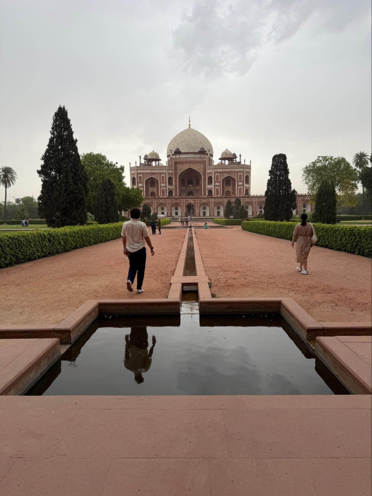
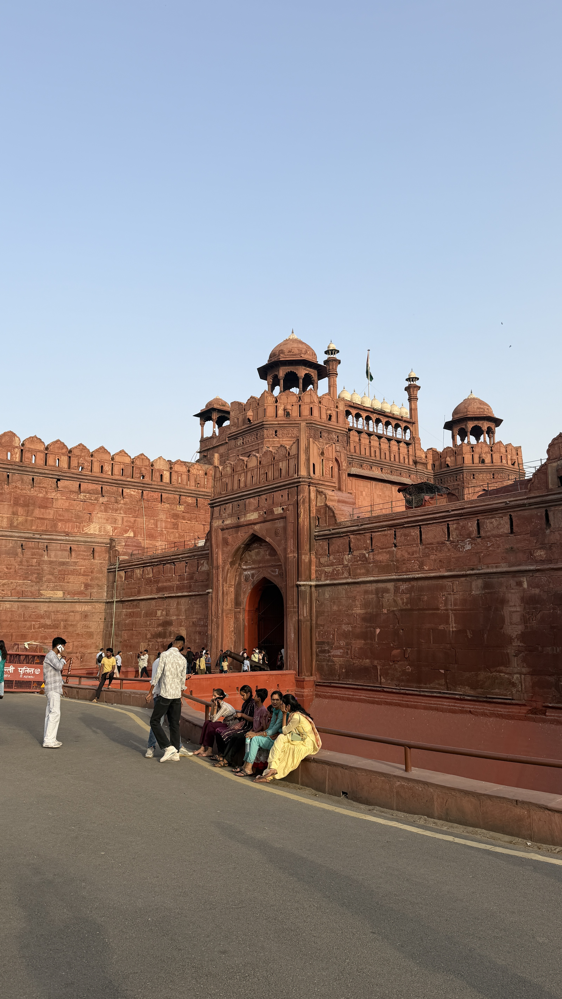
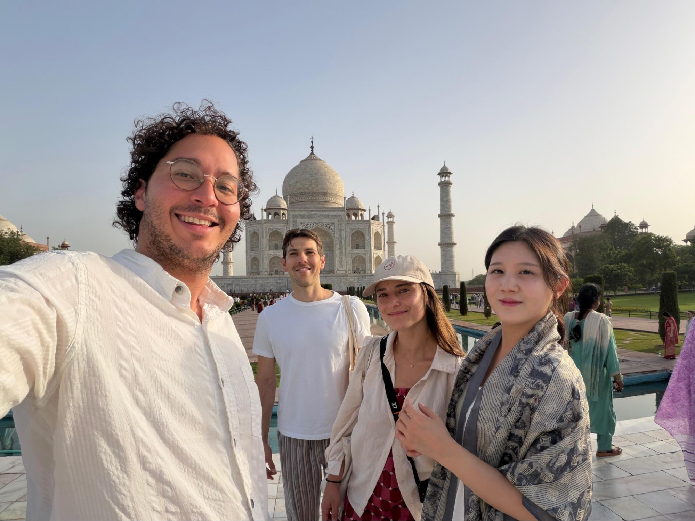
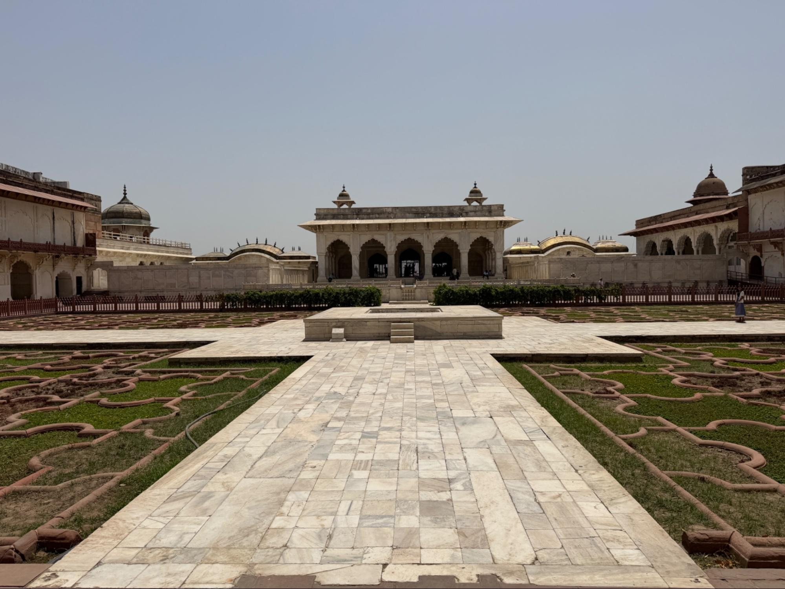
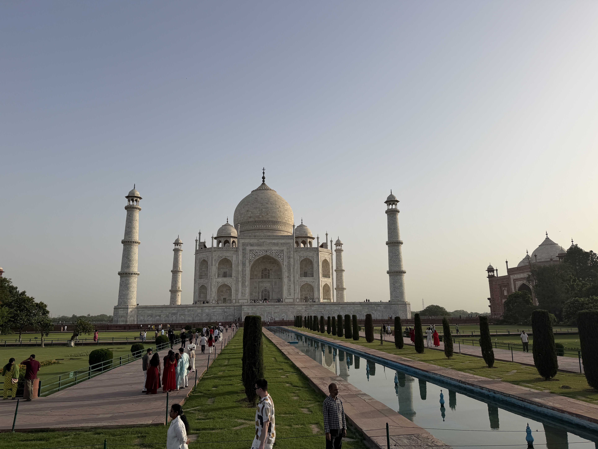
We made the journey back to Dharampur, but missed our early morning flight (we went to the wrong terminal and it turned out each terminal is 20 minutes away from each other!!!). We pulled out our laptops and worked at the airport gates and in the bumpy car rides to move the financial model closer to a finished product before our next meeting with Viraliji (the IT contact).
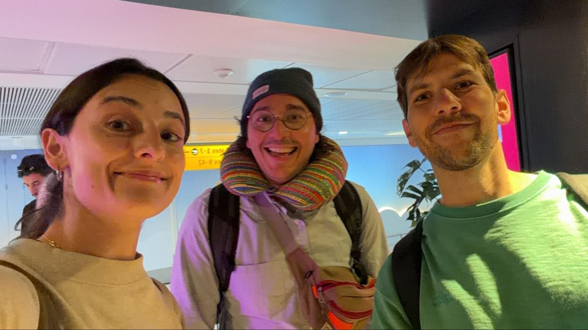
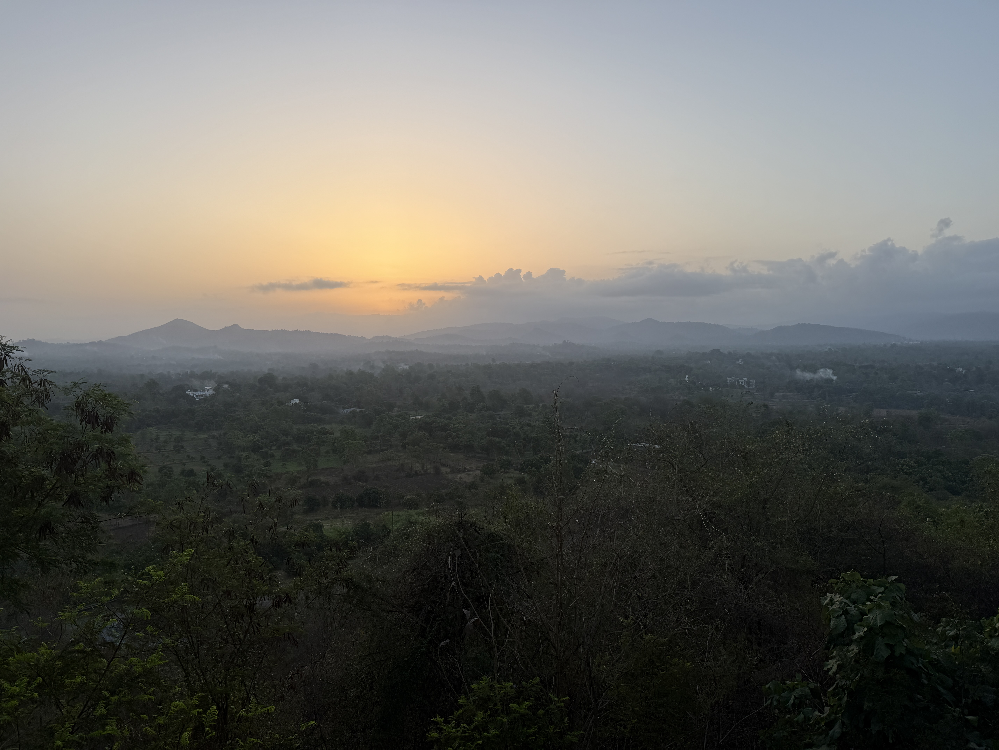
We are back at the ashram and we had lots of meetings scheduled for the day. This was the most productive day! At 10am we met with Piyushbhai again who helped outline the four different factions of the JMD project and the current labor structure that supports the project. He was also incredibly helpful in connecting us with the people directly involved in the JMD initiative — the individuals we ideally should have been collaborating with from the beginning of the project. He also provided us with his driver to let us get to the JMD facility later that day because we didn’t have a driver to get there!
At 3pm we met with Disha, who we have spoken with multiple times via zoom in the past six months. She is responsible for registration for the Ashram. From this meeting we realized that most of our target audience would be the non-repeat visitors who come to the Ashram (those who are not there for spiritual reasons). Additionally we established a plan that would build the JMD excursion into existing activity packages for groups and corporates that come to the Ashram. We then headed over to the JMD site to meet with vets at both the small and large animal clinics to conduct interviews about the existing educational training they do in partnership with the University of Edinburgh and Glasgow.
We had a particularly insightful meeting with a veterinarian that works with the small animals in the medical clinic that will be replaced by the larger animal hospital that is being constructed as part of JMD. He is originally from New Delhi and helped us understand the contexts of animals that will be served as well as the incentives for veterinarians who would attend the courses offered by JMD. He confirmed for us that the prices we had suggested for veterinarian courses were competitive for the domestic Indian market, and that there is a growing market for veterinarians that want to take graduate diploma programs as opposed to pursuing a full masters degree in veterinarian science. Overall, this meeting suggested that veterinary education programs might potentially be the most valuable source of revenue for JMD.
After a brief dinner break, we presented our latest financial model to the head of IT, Viraliji. She confirmed that she would be able to host a website that offers an interactive dashboard version of our excel model. We also had a zoom check in with one of our project’s point of contacts Neil, who was in the states. With Neil we had the opportunity to share candid feedback of the things that had worked well and not so well in the project.
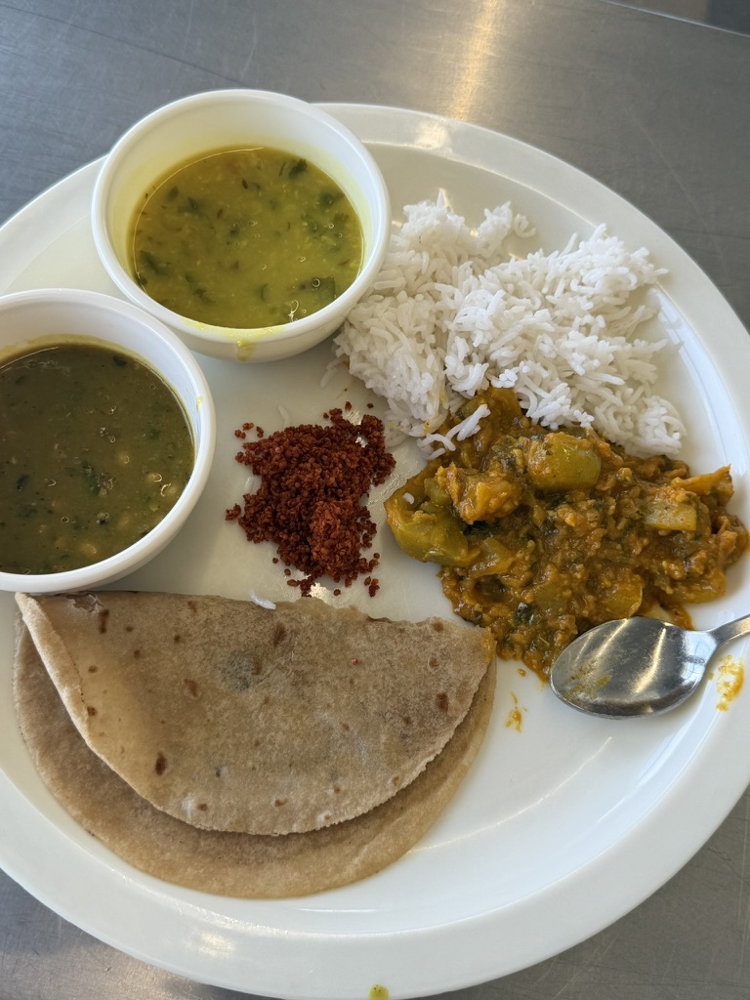
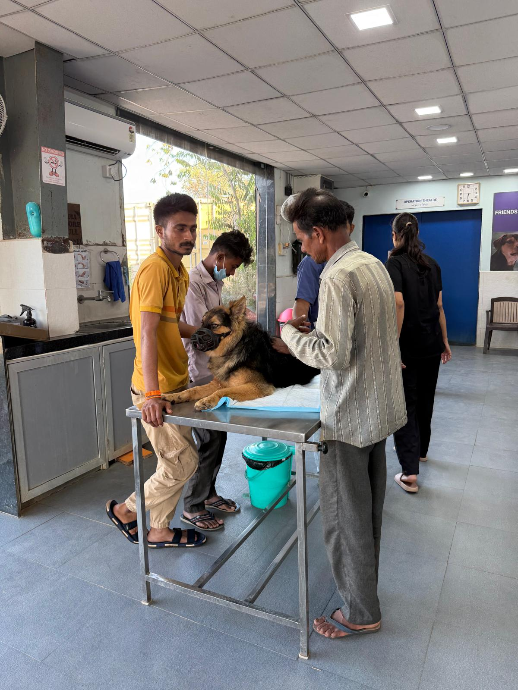
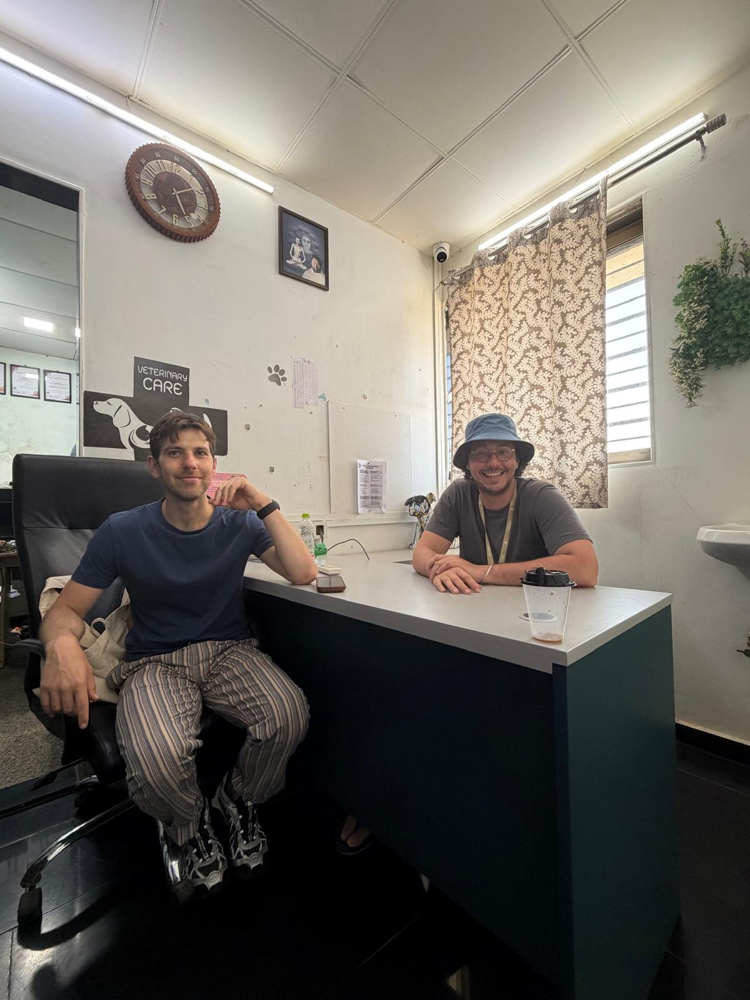
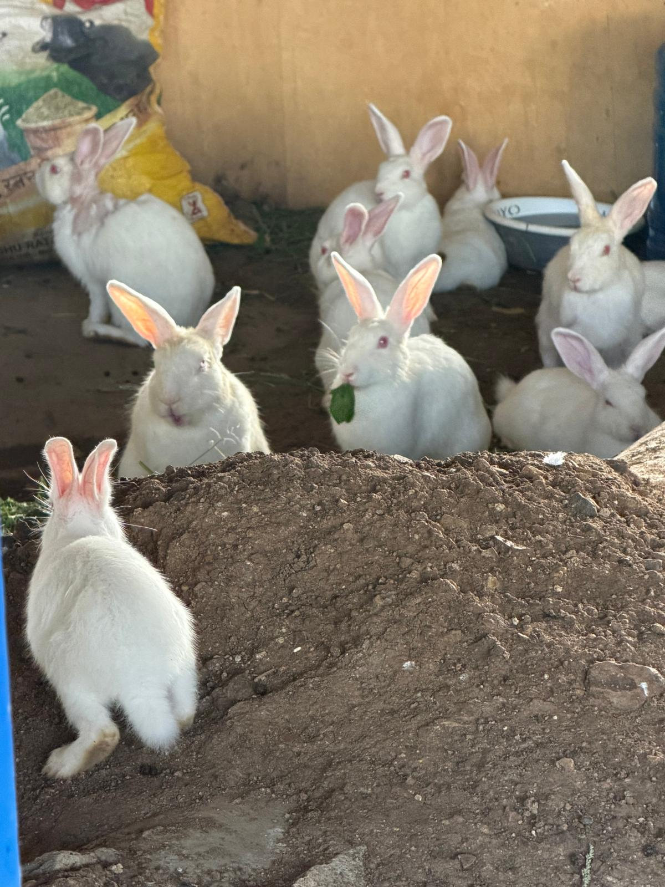
As the project deadline approached, we began finalizing our work and preparing our deliverables. We scheduled several last-minute meetings with individuals connected to us through Piyushbhai, whose introductions proved extremely valuable for the project.
In particular, we met with the team in charge of the Ahimsa Awareness Center, which is one of the most important and unique aspects of JMD. We had a particularly fruitful discussion surrounding pricing and packaging for the Ashram. In particular, we discussed how to place JMD within India’s broader attraction industry, and how capacity for visitors might be a crucial factor in determining pricing. The team mentioned a desire to explore price sensitivity for visitors and how it might impact visitation numbers. They seemed to believe that we were pricing the attractions too low, but our research suggests that their expectations for prices would be too high.
Our point of contact’s trip to the ashram was postponed to the following day, so we instead held a virtual meeting with her to continue our discussions.
We also adjusted our schedule and decided to move to Mumbai the next day after learning that most of the key stakeholders would not be reaching the Ashram until the following Monday and would be staying in Mumbai. Unfortunately, Saloni — our key contact throughout the project — would be traveling to the Ashram finally just as we were about to leave. With her, we decided she would join the conversation virtually so we could present in person to the leadership team.
We then met virtually with Manoch Bhai, a Vet working for the clinics in Mumbai who was responsible for leading the veterinary education portion of the project. We verified our assumptions with him and gained deeper insights that helped us justify the cost of higher priced diploma and CPD programs in India. This information, paired with what we learned from the Vet the day before, helped finalize the education packages we would roll out.
In the evening, we participated in a sound bath session, which was an incredibly mind-blowing experience that helped release much of the stress and tension we had built up over the past few days. We also spent some time in the meditation room afterward. Slowly, a sense of inner peace was beginning to emerge.


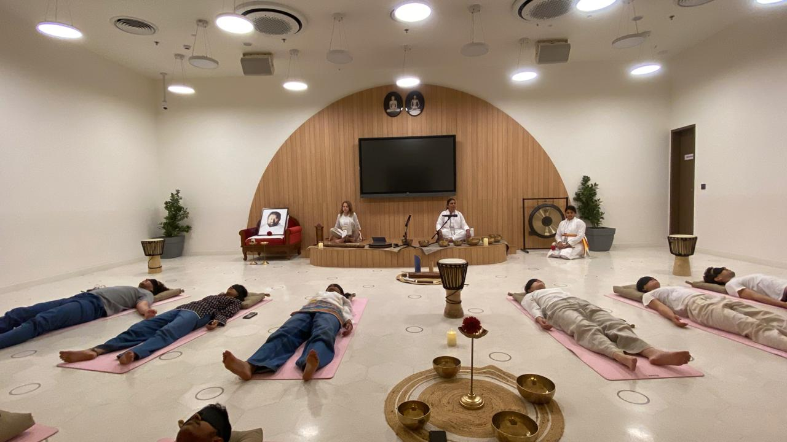
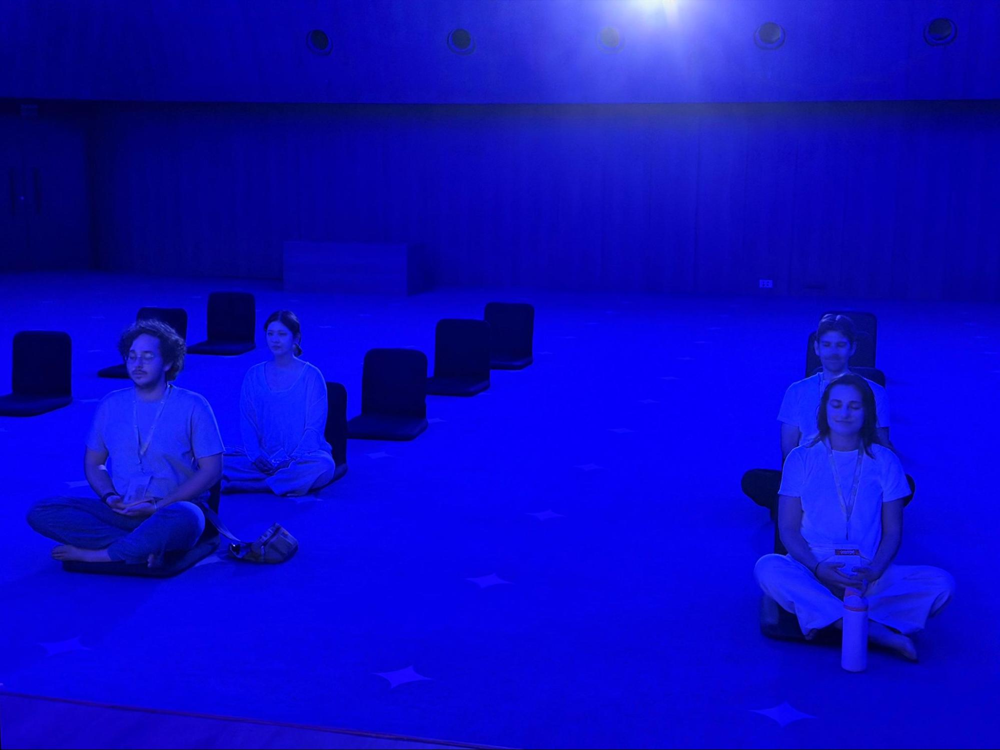
We left the ashram at 6am to get back to Mumbai. It was another 5 hours on the bumpy road. Back in Mumbai, a classmate invited us to his home over lunch. Back to potatoes! We had the best meal ever!
Our final presentation with Dharmeshbhai was scheduled for 7pm in Mumbai, so we finalized our project before the presentation, working in the notes we took from our conversation with the Experience Center Team, Manoch Bhai, and the ashram visitors we spoke with.
We headed to SRMD’s Mumbai office location to present to the JMD team. The presentation was such a success that we found ourselves being quickly hustled into vans to go meet the Guru before he headed off to the Ashram. Thank god our fellow classmate who spoke Hindi came along and understood what they were saying, otherwise we would have assumed we were being kidnapped! According to our friends, the team thought our presentation and findings would help the organization immensely, and that we should meet Gurudev because of that. The Guru even shook hands with Chris. Quite a wild last two hours to wrap out the project.
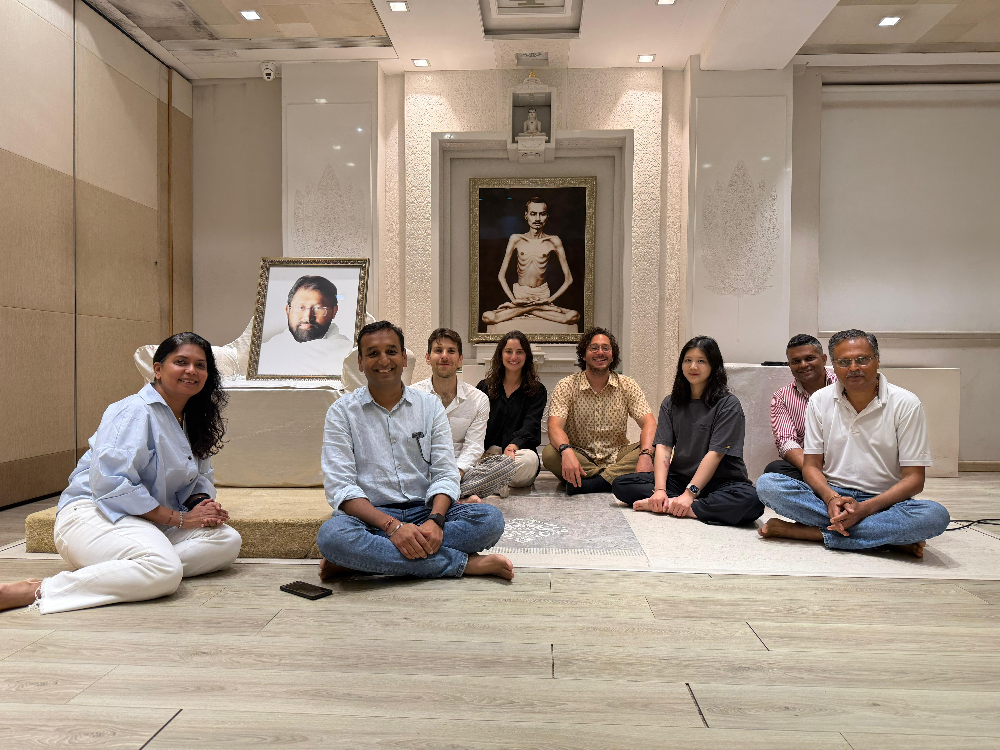
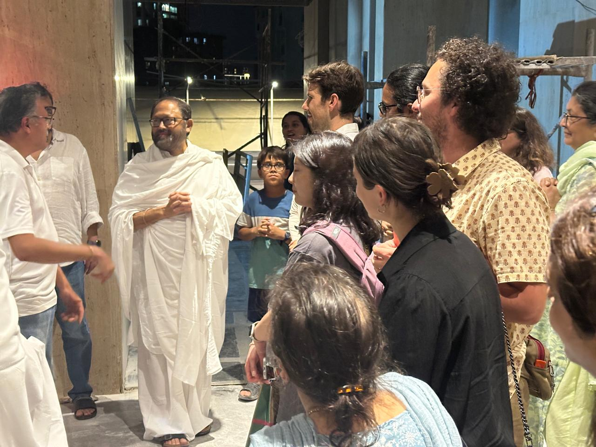
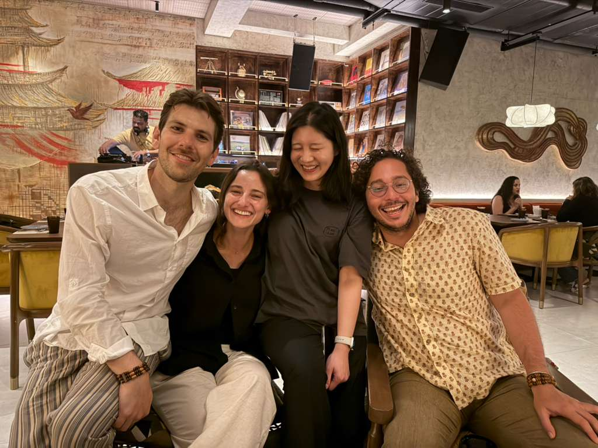